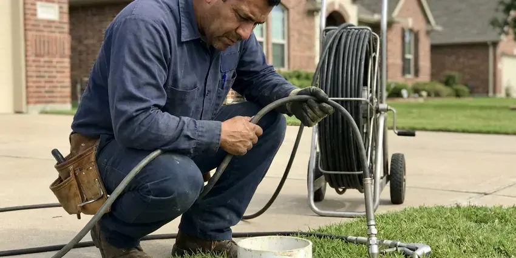
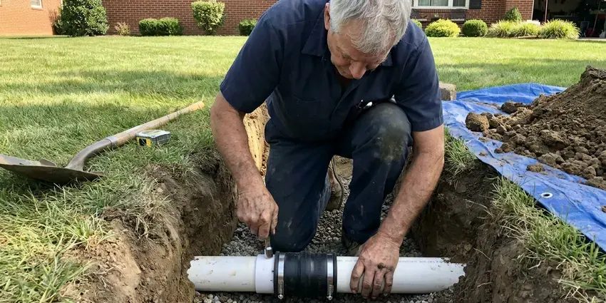

Drain Cleaning in Columbus, OH
Slow sinks, gurgling tubs and backed-up floor drains in Columbus, OH, cleared with real drain machines and a camera when it is needed.
- No Acid or Caustic Chemicals
- Main Line Machines on Every Truck
- Flat-Rate Fixture Pricing
- Camera Footage You Can Keep
Backed-Up Sink or Tub in Columbus, OH?
Call now and a drain tech will give you a clear price before any cable goes in the line.
Drain Cleaning in Columbus, OH Done Once
HRL Plumbing cleans drains across Columbus using drum machines, sectional cables and, when needed, a camera to confirm the pipe is open wall to wall. We match the cutter head to the pipe size. A 1-1/2 inch lav drain and a 4 inch building sewer are very different jobs, and using the wrong one is how pipes get damaged.
Work we handle every week:
- Camera inspection to verify full flow after cleaning
- Color drain camera inspections with video you keep
- Root cutting heads for clay and cast iron mains

Additional Drain Services Services in Columbus, OH
From stubborn kitchen clogs to main sewer backups, our drain services in Columbus, OH restore full flow fast and keep it that way.



Local hydro jetting by HRL Plumbing, Columbus

Professional sewer line replacement, Columbus


Customers
Why Choose HRL Plumbing for Drain Cleaning in Columbus, OH?
A drain tech who only pokes a hole through the clog will be back in a month. We cut the pipe back to full width. That takes a bit longer on the first visit, but a line cleaned that way usually stays clear far longer than one that was punched through with a quarter inch hand snake and a lot of hope.
- Clean Work Area, Drop cloths, shoe covers and a wipe-down of the fixture are part of every drain call.
- Roots and Soil, We know how tree roots and settling ground affect sewer lines around Columbus.
- Proof on Camera, When a line keeps clogging, we run a camera so you can see the cause on screen.
Citywide Coverage
No part of Columbus is too far out for a drain call. We route trucks by area through the day. That keeps the drive short and the arrival window tight, even for emergency calls late in the evening or on a weekend.
Experienced Team
Our techs carry the same training no matter which truck shows up. Consistency matters to us. The camera, the cleanup and the final water test are part of every visit, not an extra for some customers.
Safety-First Approach
Some drain problems turn out to be code problems, like a missing vent or an old S-trap. We point those out. Most are cheap fixes. Fixes follow the local code, and we schedule the inspection when one is required.
Trusted Certified Columbus Plumbing Services Professionals
At HRL Plumbing, we are proud to offer certified plumbing services throughout Columbus, OH. Credentials matter in this trade. Our plumbers hold recognized industry credentials, and they follow strict safety and quality rules on every repair, installation and maintenance call we run.
Call Us Now PHCC Plumbing Contractor Recognition
PHCC Plumbing Contractor Recognition Better Business Bureau (BBB) Accreditation
Better Business Bureau (BBB) Accreditation Angi Certified Pro
Angi Certified Pro ISO 9001 Quality Management Certification
ISO 9001 Quality Management CertificationDrain Cleaning Services in Columbus, OH
Night and Holiday Drain Service in Columbus
Backups love holidays, mostly because of guests and grease. We answer those calls. The tech arrives with a full drain setup, including a main line machine and a wet vac for standing water, and the first goal is getting the line flowing, with damage photos for insurance taken before cleanup starts.

Camera Inspection After Drain Cleaning in Columbus
A camera shows what the cable felt. Self-leveling heads keep the picture upright. Older cast iron tends to show scale and a worn-through bottom, and clay pipe usually shows roots at the joints, and a locator marks the depth on the surface so a repair can be dug in the right spot.
Main Sewer Drain Cleaning in Columbus
Tub filling when the toilet flushes is the classic main line sign. Find the cleanout, and the job gets easier. We run a sectional machine with a root cutter through the main until the head spins free, then recommend a camera pass to look for a break, and if there is no cleanout at all we can add one.
Clogged Toilet Repair in Columbus, OH
Toilets clog at the trapway, a tight bend inside the porcelain. A closet auger reaches it without scratching the bowl. If the toilet clears but water still rises in the tub, the clog is past the toilet in the branch or main, and we move to a bigger machine at that point. Kids' toys come out too.
Emergency Drain Cleaning in Columbus, OH
Sewage coming up through a shower drain does not wait for Monday. Our phones are answered after hours too. Every emergency truck carries a main line machine and a wet vac, so the first job is stopping the backup, and the second is getting enough flow back that you can use a toilet again before morning.
Laundry and Floor Drain Cleaning in Columbus, OH
Washers push lint and softener residue into the standpipe. Then the standpipe overflows. Our tech cables the standpipe and its branch, and checks the trap and vent while there, and garage floor drains full of grit and gravel get cleared and flushed so they can take a full washer discharge without backing up.
Office and Retail Drains in Columbus, OH
Restroom batteries, mop sinks and floor sinks all clog in their own way. Paper towels flushed in a public restroom cause most of them. Our crew handles floor sinks, mop sinks and restroom lines outside of business hours when that works better for you, and you get a written report for your maintenance file.

Commercial Drain Cleaning in Columbus, OH
Restaurants, salons and offices load drains harder than homes do. A busy shop puts a year of household waste down a line in a month. We bring heavier sectional machines and jetters that handle 4 and 6 inch lines, and we can schedule work before opening or after close so you do not lose a lunch rush to a plumber in the kitchen.
Drain Cleaning Near Me in Columbus, OH
Searching for drain cleaning near me in Columbus usually means water is already sitting in a sink. We dispatch from close by. That keeps arrival times short, often the same day you call, and the truck carries enough equipment to finish the job without a second trip to the shop for a bigger machine.
Mineral scale, cooking grease and roots looking for water cause most drain trouble in this area. Those patterns repeat from house to house on nearly every street we work, year after year. Knowing them helps us pick the right cutter head before we walk in the door and finish faster, which keeps your price predictable. Fewer surprises, too.
HRL Plumbing at a Glance
- Licensed and insured plumbers serving Columbus, OH
- Same-day appointments and 24/7 emergency response
- Upfront, flat-rate pricing before work begins
- 4.9-star rated by 673+ Ohio customers
Columbus Map
Columbus Information
- Population
- 913,175
- Area codes
- 614/740/380
- Service area
- Columbus and communities within 40 miles
- Nearby
- Dublin, Newark, Springfield, Mansfield
Shifting ground can stress buried drain pipe in Columbus, OH, and tree roots find any loose joint in an older sewer line. Basements are standard in most homes, and many rely on sump pumps to move groundwater away during wet periods.
Talk to a Plumber
Call HRL Plumbing for honest, reliable plumbing from people who know the trade in Columbus, OH.
Our Specialized Plumbing Services in Columbus, OH
At HRL Plumbing, we handle the full list of plumbing services across Columbus, OH. From leak detection to full system installs, our team works fast and charges fair prices on homes and commercial properties alike. Here are the core services we offer:


How It Goes When We Clean a Drain in Columbus, OH
Every drain call follows the same order, so nothing gets skipped.
Call or Book Online
Call (740) 449-7505 and tell us which drains are slow. A few quick questions help us bring the right machine.
Find the Clog
Your tech checks the affected fixtures and finds the best access point. A camera goes in if the line keeps clogging.
Clear the Line
We run a drum machine, sectional cable or jetter sized for the pipe. The goal is a pipe open edge to edge, not a pinhole.
Frequently Asked Questions About Drain Cleaning in Columbus
Single fixture drain cleanings in Columbus run about $125 to $275. Main lines from a cleanout typically cost $175 to $450. Add more for a camera. Adding a camera inspection usually adds another $150 to $350, depending on the length of the line and the access point.
Not really, no. They eat at older metal pipe and some plastic fittings, and they can burn skin and eyes. They also rarely clear the whole clog. Cables work better.
No permit is needed for routine drain cleaning. Pipe work can be another story. Replacing a sewer line, adding a cleanout or changing the drain layout usually needs a permit, and we tell you upfront if your job falls into that group.
Slow drains are the first sign. After that you may hear gurgling or smell sewer gas. Water backing up into the shower when the washer drains tells us the blockage is in a branch or the main, which is the point where a plunger will not help.
Our trucks carry RIDGID, Spartan Tool and Gorlitz machines. Those brands hold up in daily use. Each one comes with cutter heads sized for different pipe, from small fixture lines up to 6 inch commercial mains.
Yes, in writing. The guarantee covers the line we cleared. Should the same drain clog during the warranty window under normal use, the return visit is free.
Roots follow moisture. Warm, wet air escapes through cracks and old joints. Fine root hairs find those gaps, grow inside the pipe and thicken into a mat that catches paper and waste, and clay and older cast iron lines near mature trees are the most common victims.
We run RIDGID, Spartan and General Wire machines, plus color camera systems that record every inspection to a file you can keep. This is field-tested gear. These tools let us clean the pipe fully without scratching fixtures or chewing up older pipe walls.
Hear From Customers Who Hired Our Plumbing Experts

Karen W.
After our third pinhole leak in copper, we stopped patching. HRL Plumbing gave us a written plan room by room and repiped the house in PEX while we stayed in it. The crew covered our floors every morning and cleaned up every night.
Repiping · Newark, OHDiane F.
My kitchen faucet had dripped for months and I finally got tired of hearing it at night. HRL Plumbing came out the next morning, replaced the cartridge and the O rings, and tightened a loose base that was letting water under the sink.
Faucet Repair · Springfield, OH
Nathan E.
Our tankless heater kept throwing an error code and shutting off mid shower. The tech flushed the heat exchanger, which was full of scale, and replaced a bad flow sensor. Hot water has been steady for half a year now.
Water Heater Repair · Mansfield, OH
Mark T.
The floor drain in our office break room backed up every few weeks. The plumber ran a cable, then put a camera down and found roots at a joint about thirty feet out. Seeing it on the screen made the decision easy.
Drain Cleaning · Columbus, OHKevin O.
Before buying our house I paid for a sewer camera inspection. HRL Plumbing found a belly in the line that held standing water about forty feet from the cleanout. We used the video to get the sellers to fix it before closing.
Sewer Camera Inspection · Dayton, OH
Laura S.
Our 40 gallon tank started leaking from the bottom after thirteen years. The tech hauled the old one out, set a new unit with a fresh expansion tank, and had hot water running in about four hours. He took the old tank with him too.
Water Heater Replacement · Dayton, OH